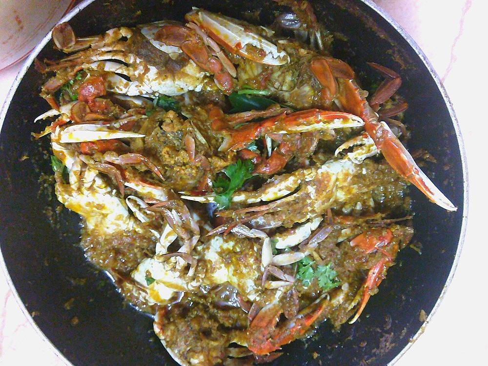

Contains: crustacean shellfish, sesame
Ingredients
Quantities for 4.
- 1kg, live or very fresh mud variety, cleaned and cut into halves with claws cracked Crab
- 14 small, finely chopped Shallot
- 2 medium, chopped Tomato
- 10 cloves Garlic
- 2 inch piece Ginger
- 1/2 cup, freshly grated Coconut
- 8 Dried Red Chilli
- 2 tsp whole Black Pepper
- 2 tsp Fennel Seeds
- 1 tsp Cumin Seeds
- 2 tbsp Coriander Powder
- 1 tbsp Poppy Seeds
- 1 tsp Stone Flowerkalpasi
- 1 whole Star Anise
- 1 inch stick Cinnamon
- 4 Cloves
- 1 tsp Turmeric
- 3 sprigs Curry Leaves
- 4 tbsp Sesame Oilgingelly oil
- 1/2, juiced Lemonto finishoptional
- to taste Salt
- 250ml Water
- 3 tbsp, chopped Coriander Leavesto finishoptional
Cookware
stovetop, kadhai, blender
Checked against the ingredient list for ten allergens: milk, egg, fish, crustaceans, tree nuts, peanuts, sesame, mustard, soy and gluten. Brands vary, so read the label on anything new to you.
Before you start
- Have the fishmonger clean and cut the crab, or do it yourself: lift the top shell, remove the gills and stomach sac, rinse, halve the body and crack the claws with the back of a heavy knife.
- Rub the crab pieces with the turmeric and 1 tsp salt and leave 15 minutes, then rinse.
- Cracking the claws before cooking is what lets the masala get inside; uncracked claws come out bland.
- Roast and grind the masala first. Crab cooks in minutes and cannot wait for you.
Method
- Dry-roast the red chillies, pepper, fennel, cumin, coriander powder, poppy seeds, stone flower, star anise, cinnamon and cloves over low heat for 4-5 minutes until fragrant.
- Add the coconut and roast 3 minutes until light brown, then cool completely and grind with 100ml water to a coarse paste.Leave this masala slightly coarse. Crab masala should have texture to cling to the shell.
- Heat the gingelly oil in a wide kadhai and crackle two sprigs of curry leaves.
- Add the shallots and fry 7 minutes over medium heat until deep golden.
- Pound the ginger and garlic to a paste, add it and fry 2 minutes until the raw edge is gone.
- Add the tomatoes and cook 5 minutes until they collapse and the oil shows.
- Stir in the ground masala and fry on low for 8 minutes, scraping constantly, until it is thick, dark and oily at the edges.This is the longest fry-down in the batch and it matters most here. The masala must be fully cooked before the crab goes in, because after that you only have minutes.
- Add 150ml water and salt, bring to a boil and simmer 3 minutes.
- Add the crab pieces and claws, turn them through the masala, cover and cook 8-10 minutes on medium.The shells turn bright orange when done. Any longer and the meat goes stringy.
- Uncover and cook 4 minutes on high, tossing, until the masala clings to every piece and there is almost no free liquid.
- Fry the last curry leaf sprig in a spoon of oil, scatter it over with the coriander, squeeze on the lemon and serve hot with plenty of napkins.
Safe temperatures: Prawns, crab and squid are done when the flesh is opaque and pearly right through. Reheat leftovers to 74°C / 165°F. FoodSafety.gov
Storage
Eat the same day. Leftovers keep 1 day refrigerated; reheat in a covered pan over low heat with 2 tbsp water for 5 minutes.
Nutrition Low estimate
High protein: 49 g a serving, 43% of the calories
| Per serving418 g | Per 100 g | |
|---|---|---|
| Calories | 456 kcal | 110 kcal |
| Protein | 48.6 g | 12 g |
| Carbohydrate | 13.9 g | 3 g |
| of which sugars | 2.6 g | 1 g |
| Fibre | 5.9 g | 1 g |
| Fat | 23.5 g | 6 g |
| of which saturated | 5.9 g | 1 g |
| of which unsaturated | 15.8 g | 4 g |
Ingredients given to taste count as zero, so the real figures run a little higher. Nearest database match used for curry leaves, stone flower. Estimated from raw ingredients using USDA FoodData Central.
More like this: Gluten-free Indian recipes · Dairy-free Indian recipes · Tamil Nadu recipes
Times, yields, allergens and nutrition are guidance. Use your own judgement on doneness and on storing. More in About.